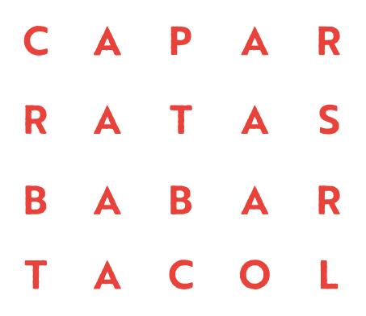

CAMBIAR PALABRAS
En esta actividad, cada estudiante debe transformar una palabra en otra mediante la incorporación de una letra.
- La educadora entrega las letras necesarias para formar la primera palabra y propone escribirla.
- Luego agrega una nueva letra y pregunta dónde debe ubicarse para formar la segunda palabra.
- Si es necesario, se prolongan los sonidos para reconocer la posición de la letra incorporada.
- Se repite el procedimiento con los demás pares.
CAPA – CARPA;
RATA – RASTA;
BABA – BARBA;
TACO – TALCO
